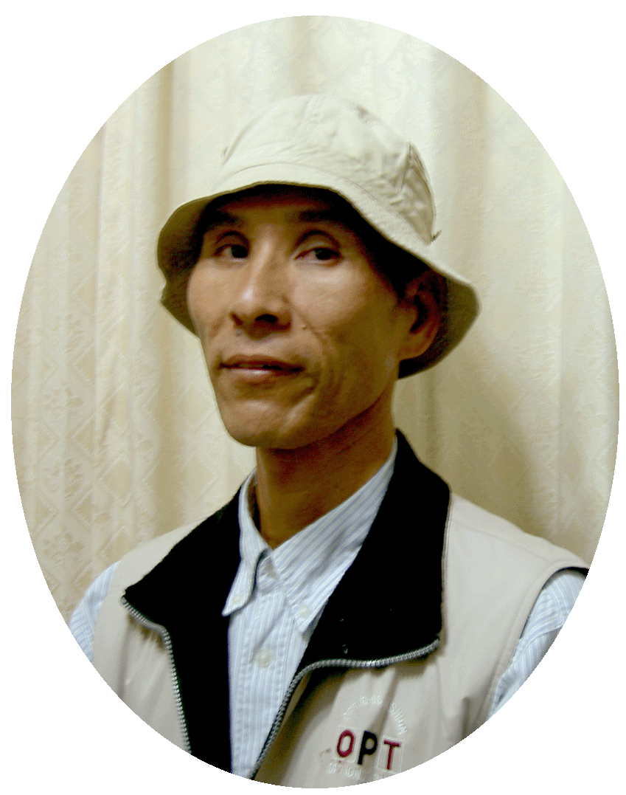
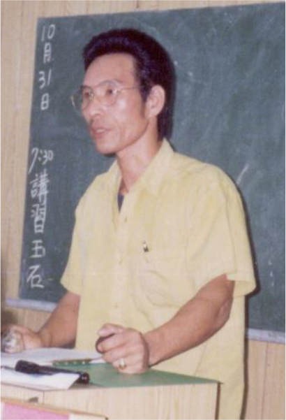

【創作者簡介】
出生於1957(淺秋)臺北新店
【人生經歷】
水電工程負責人、泛舟事業股東、山莊經營者、成立個人工作室研發玉石、觀光景點專櫃營運，投入玉石社團擔任會長創辦《2008玉石祭》全國邀請首展推廣玉石產業、籌組奚卜蘭觀光發展協會提升在地文化，致各相關院校及職訓局教授玉石相關課程、為人生退場機制於花蓮市區購地建造咖啡莊園規劃做一位知玉良農。
【自傳】
人生猶如走馬燈，我之一生確是命運乖舛在苦海波濤中沉浮嚐盡世態炎涼甜酸苦澀，也因如此而豐富了一身歷煉並寫下一頁頁篳路藍縷，在70年代初約四十年前我遠從繁華之都臺北舉家東進落腳於秀姑巒溪出海口展開拓荒史記。起源投資泛舟事業因遇人不義股東衍生淘空公款致使公司宣告倒閉停運，後輾轉經營泛舟休息山莊開設全鄉第一家卡拉OK其間歷經三大颱風一次大火洗禮傾盡全身分文，慘澹潦倒面對茫然的未來，陷在那谷底深淵處卻因緣際會遇見了時任泛舟救生隊隊長林慈德先進，並由他啟蒙
【創作者經歷】
1984年 遷居東海投資泛舟
1985年 成立紅蕃谷山莊
1987年 投入東海玉石探索的行列
1988年 開始從事玉石創作
1990年 應邀至花蓮縣政府展示，並發表花東玉石開發專題演講
1991年 遷居於秀姑巒溪出海口，成立石中玉工作室
1992年 受聘於多個玉石協會與學術顧問
1994年 擔任玉石協會理事與教育機構講師
1997年 遷居豐濱擴建工作室
1998年 顧問職務於高雄寶石雕刻協會
2000年 成立東海岸玉石推廣專櫃
2004年 擔任玉石學會副理事長
2005年 成立月推廣部
2007年 擔任玉石學會理事長
聯絡我們
台11線 東海岸線上。 聯絡電話：0933-798966 0910-123893